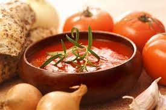
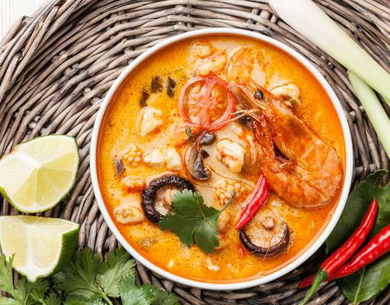
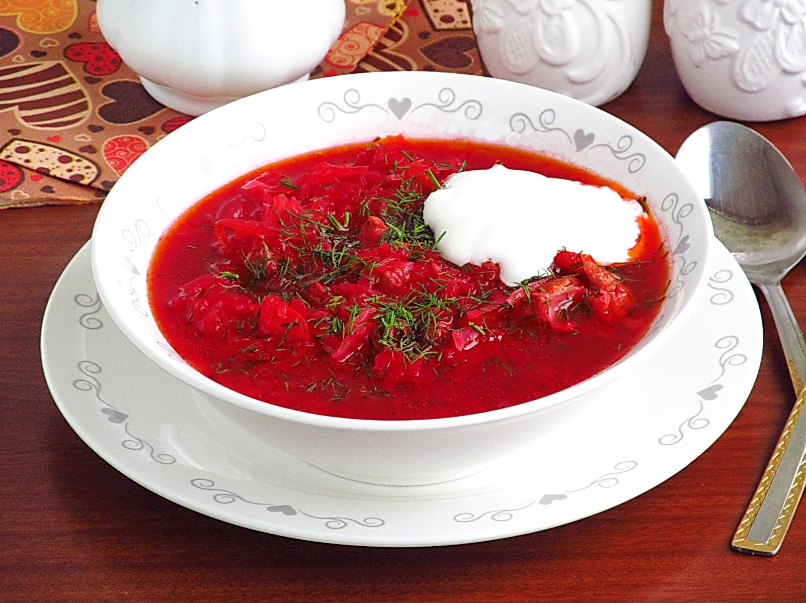

Заголовок
Абзац
Маркированный/Ненумерованный список
Нумерованный список
- Довести воду до кипения
- Засыпать ингредиенты
- Варить 10 минут
Список определений
- Гаспачо
- легкий холодный суп из перетертых в пюре свежих овощей

Гаспачо
- Том-ям
-
кисло-острый суп на основе куриного бульона с креветками, курицей, рыбой
или другими морепродуктами

Том-ям
- Борщ
-
разновидность супа на основе свёклы, которая придает борщу характерный
красный цвет

Борщ
Вложенные списки
-
Омлет
-
Блинчики
- Молоко
- Яйца
- Мука
- Сахар
- Соль
- Разрыхлитель
- Торт
- Пирог